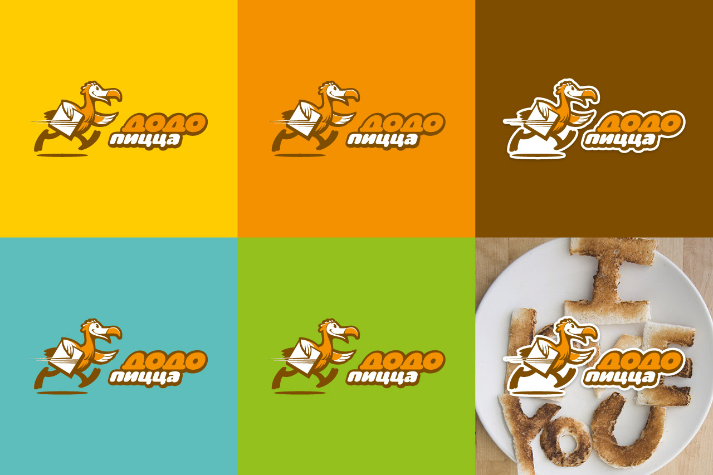
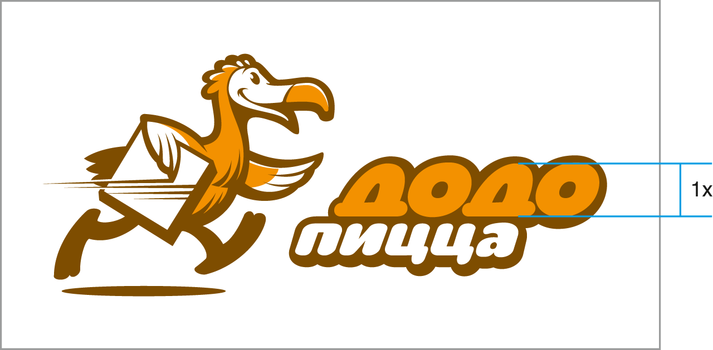
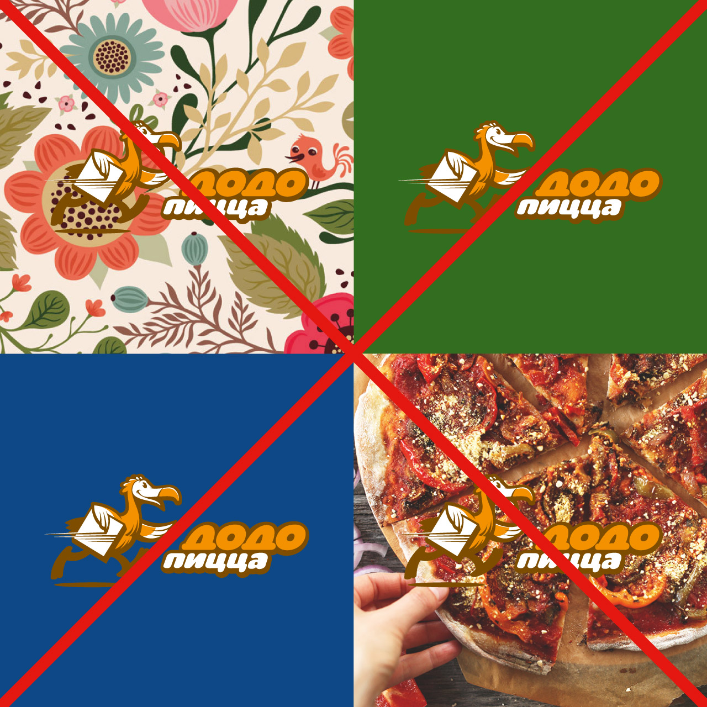
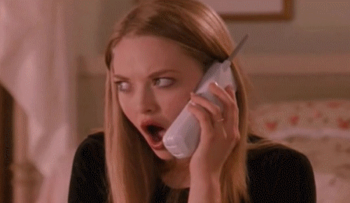
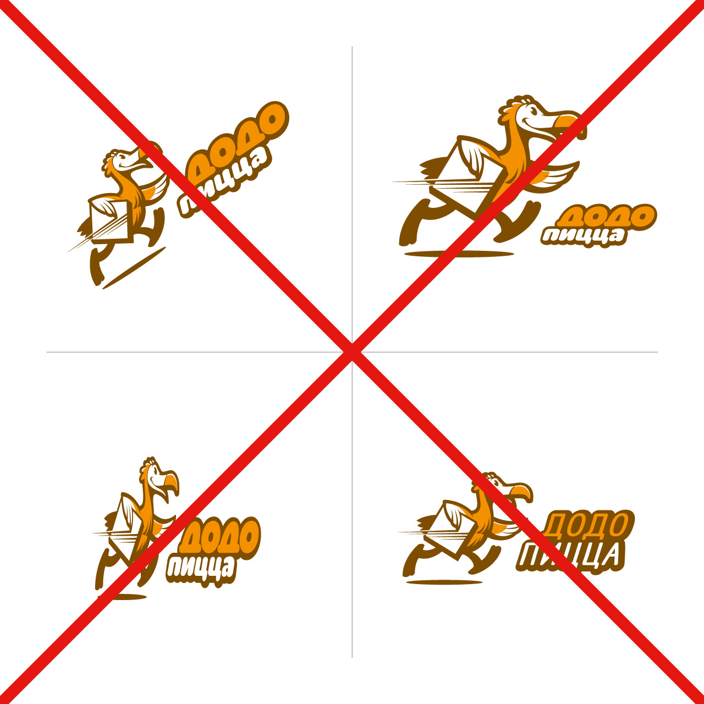
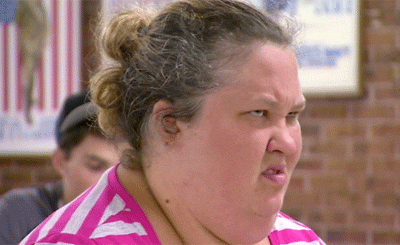
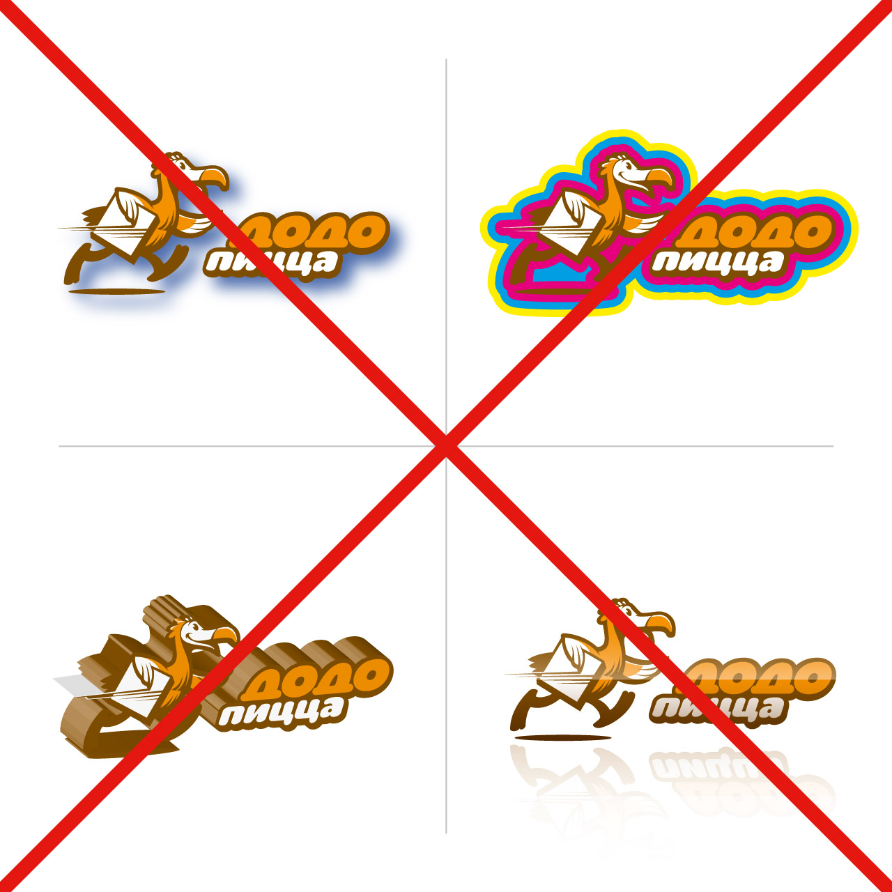
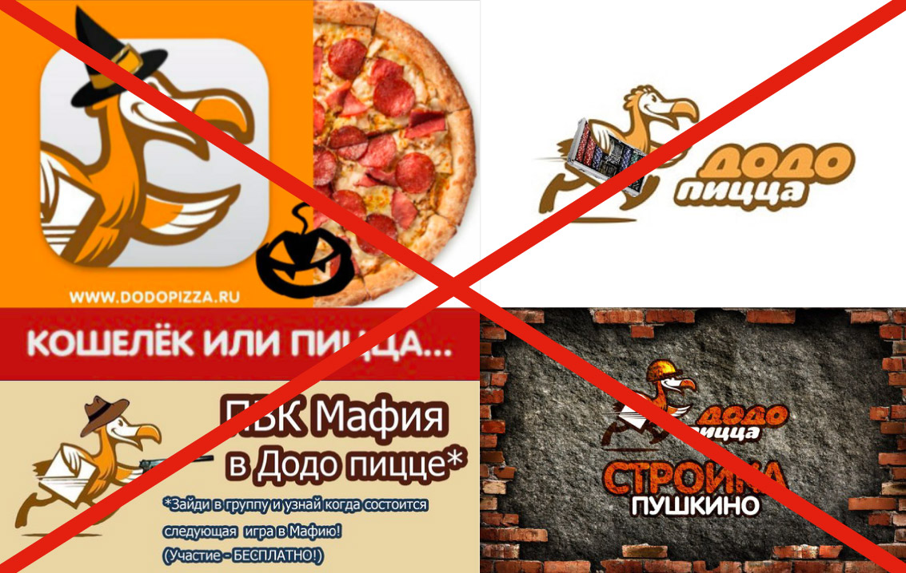
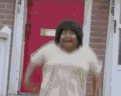

Логотип
Логотип — главный и самый видимый элемент фирстиля, объединяющий всю визуальную коммуникацию Додо Пиццы.
Основной логотип

Логотип на цветном фоне
Логотип Додо Пиццы прекрасно сочетается с корпоративными цветами, поэтому его можно без проблем размещать на желтом, оранжевом, морском и зеленом фонах.
Для темных или сложных фонов используйте логотип с белой подложкой (см. логотип на коричневом и фотографическом фонах).


Логотип в одну строку

Черно-белая версия

Английская версия

Английская версия в одну строку

Английская черно-белая версия

App icon

Минимальный размер логотипа
Когда место для размещения логотипа безумно сильно ограничено или доступная площадь приближается к 10 мм, то лучше использовать логотип в одну строку или app icon, в зависимости от того, что важней в макете — надпись «Додо Пицца» или изображение птицы.
Где найти?
Можно и Нельзя
Человек с чувством стиля никогда не позволит себе надеть босоножки с носками.
01 Свободное поле
Всегда оставляйте вокруг логотипа свободное поле, чтобы он мог дышать. Лучше всего использовать белый фон.
Минимально допустимое свободное поле равно высоте буквы «Д». Запомните раз и навсегда.

03 Ииииу! Уберите!
Не размещайте логотип без подложки на пестрых и темных фонах.


04 Все не так
– Не поворачивайте логотип.
– Не изменяйте пропорции отдельных частей логотипа.
– Не сжимайте логотип.
– Не заменяйте шрифтовую часть логотипа.


05 А-та-та!
Не применяйте к логотипу эффекты типа теней, обводок, псевдо-объема, градиентов, отражений и т.п.

06 Never do that shit! I mean it, guuurl.
Не дорисовывайте птичке касок, кепок, ушанок, фетровых шляп и прочего хоррорного мусора. Не «вкладывайте» в крыльям мангалов, оружия, мобильных устройств и, боже мой, все остальное, что может придумать ваше больное воображение.
Никогда. В. Этой. Жизни. Не. Делайте. Так.

